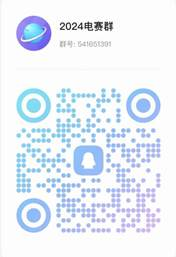

学院通知 · 竞赛比赛
关于选拔2024年四川省大学生电子设计竞赛队员的通知
发布时间：2024-04-30
各位 参赛学生 ： 2024年四川省大学生电子设计竞赛将于 2024 年 7 月 29 日 -8 月 1 日开展。为了促进我校电子类专业创新创业、学科竞赛工作，经电子信息学院电子设计竞赛指导委员会商议决定：我院拟选拔 30 个优秀赛队（ 2 人 / 队，共计 60 人）代表四川大学参加 2024 年四川省大学生电子设计竞赛，展示四川大学大学生创新创业风貌。 现将有关事项通知如下： 一、组织单位 电子信息学院 二、参赛对象 我院在校本科生 三、选拔内容及时间安排 时间： 2024 年 5 月 24 日。 地点：四川大学望江校区西五教附楼 204 创新实验室 形式：团队选拔，赛前模拟（赛题见附件 2 和附件 3 ）。根据赛队作品的完成情况选出最终代表学院参赛的队伍。 说明： 1、以赛队形式于 2024 年 5 月 10 日之前完成报名（报名表见附件 1 ）。大二、大三一起进行，共选出 60 人。后期根据省赛要求重新组队（ 3 人 / 队）。 2、参加了 2024 年全国大学生电子设计竞赛且获省一省二的同学直接晋级，不参加实物选拔，直接完成报名即可。 四、奖励办法 本次选拔成绩优秀者将获得 2024 年四川省大学生电子设计竞赛参赛资格。 五、联系方式 杨红 028-85402148 请各参赛队加入 2024 年四川省大学生电子设计竞赛选拔 QQ 群： QQ群号： 541651391 电子信息学院 2024年 4 月 30 日 附件 1 ：四川省大学生电子设计竞赛选拔报名表 附件 2 ：电动小车动态测重系统 附件 3 ：边带收发系统
